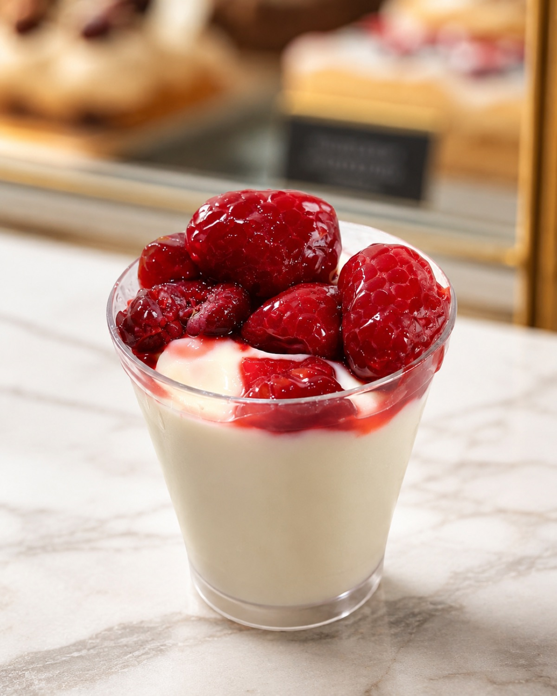

Postres en vaso
Las Claves de la Pastelería · Clase de Postres en vaso
Vaso cheesecake
Cheesecake en vaso: mousse de queso sobre un núcleo helado de frutos rojos, con base de sablée bretón y mix de frutos rojos frescos. Cuatro elaboraciones.
EscuelaEcoleCursoLas Claves de la PasteleríaChef instructoraFernanda PérezDía de realización13 de julio de 2026
Páginas 10 a 13 del PDF escaneado (páginas impresas 30 a 33).
Elaboraciones
Esta receta reúne 4 elaboraciones, en el orden en que se montan. Las anotaciones de clase van al final de cada una, separadas del paso a paso.
a
Mousse de queso
Página 10 del PDF escaneado (página impresa 30).
Ingredientes
| Leche | 42 g |
| Azúcar | 28 g |
| Yema | 13 g |
| Gelatina en polvo | 2 g |
| Agua para hidratar | 10 g |
| Queso philadelphia | 84 g |
| Crema semi montada | 84 g |
Procedimiento
- Crema inglesa invertida: primero hervir la leche con el azúcar.
- Llevar la leche a las yemas, en tandas, revolviendo con el batidor manual.
- Con un colador, llevar a una olla nuevamente y cocinar hasta que la mezcla llegue a los 84 °C.
- Añadir fuera de fuego la gelatina y luego el queso; revolver y luego triturar con la mini pimer.
- Añadir la crema semi montada a 24 °C.
- Con ayuda de una manga, dosificar en los vasos arriba del núcleo de frutos rojos.
Notas y anotaciones de clase
- Junto al queso: «pomar el queso».
b
Núcleo de frutos rojos
Página 11 del PDF escaneado (página impresa 31).
Ingredientes
| Pulpa de frutos rojos | 100 g |
Procedimiento
- Rellenar moldes de silicona de semiesferas y congelar.
c
Sablée bretón
Página 12 del PDF escaneado (página impresa 32).
Ingredientes
| Mantequilla | 57 g |
| Azúcar flor | 18 g |
| Yema de huevo duro rallada | 2 g |
| Harina | 52 g |
| Chuño | 10 g |
| Sal | 1,5 g |
Procedimiento
- Juntar la mantequilla con el azúcar flor y cremar en la máquina con la pala.
- Agregar, de a poco, las yemas junto a la sal.
- Seguir con el chuño en tandas.
- Continuar con la harina en tandas.
- Mezclar hasta que quede homogénea; no trabajar en exceso.
- Extender a 3 mm de grosor entre hojas guitarra o papel mantequilla.
- Cortar con corta pastas círculos adecuados al vaso y congelar nuevamente.
- Hornear a 160 °C por 12 minutos.
d
Mix de frutos rojos frescos
Página 13 del PDF escaneado (página impresa 33).
Ingredientes
| Mix de frutos rojos | 50 g |
| Absolut cristal | Sin cantidad indicada |
| Azúcar | Sin cantidad indicada |
Procedimiento
No indicado en el documento original.
Notas y anotaciones de clase
- Las cantidades de Absolut cristal y azúcar se mantienen sin especificar; se usan solo para espolvorear.